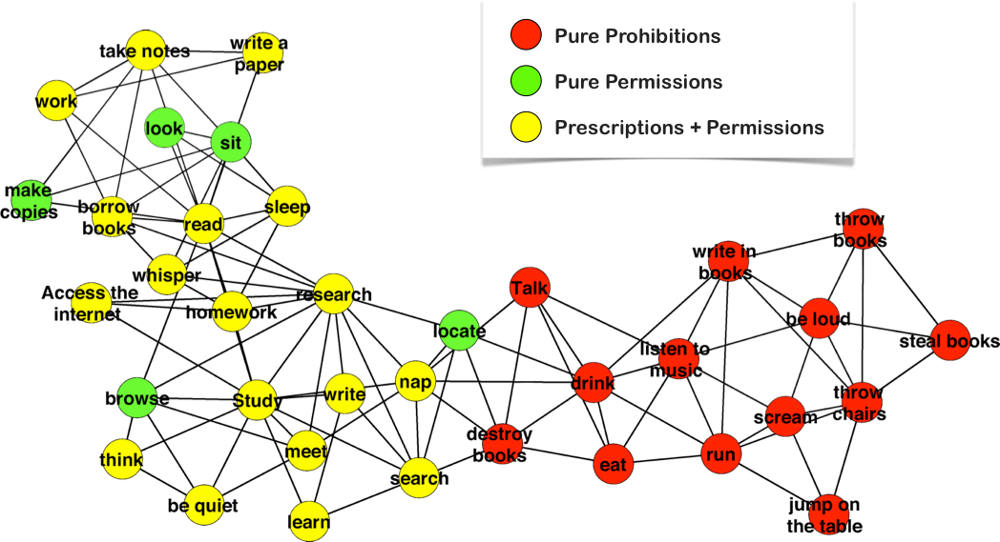
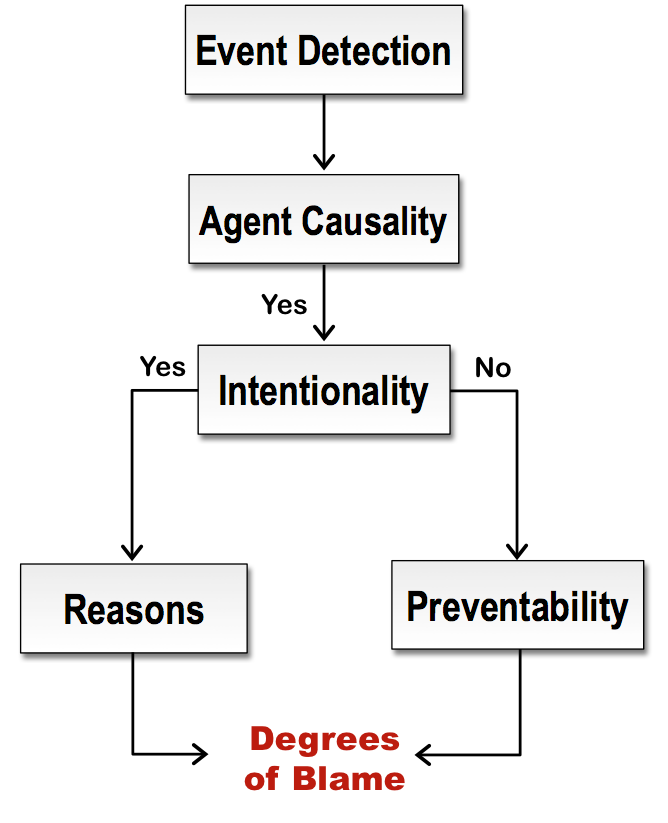

Topics:
Human beings live complex social lives, composed of various types of relationships across nested social hierarchies, all structured by rights, rules, and obligations. However, selfish goals persist, and keeping individuals’ goals in line with community interests has become the primary challenge of modern morality. To meet this challenge human societies have developed two major social-cultural tools: a vast network of rules, norms, and values and complex social practices of norm enforcement, such as blame, praise, apology, and reconciliation. These and related topics are the focus of our current work in moral psychology.
1. Norms
In this project we examine how social and moral norms are represented in the mind. We have proposed a theoretical framework (Malle, Scheutz, & Austerweil, 2016) and are engaged in several empirical studies (e.g., Kenett et al., 2016) that capture how norms are organized, activated, and learned. With a clearer sense of the properties of human norm representation we can then build norm networks in artificial agents, particularly robots that interact with humans in social settings.

2. Blame and other moral judgments
We have developed a theory of blame (Malle, Guglielmo, & Monroe, 2014; see figure below) that accounts well for past findings and has been supported in recent direct tests (Gulielmo & Malle, 2017; Monroe & Malle, 2017, 2019). In particular, people quickly and systematically search for specific kinds of information when making blame judgments, and they are keenly sensitive to changes in this information that lead to updated blame judgments. This careful moral information processing does not appear to be a classic example of resource-intensive, "deliberate" processing because it is not affected by cognitive load or time constraints. We suspect that the social costs of inaccurate blaming and the resulting demands to have warrant for blaming influence the information processing that leads to blame (Monroe & Malle, 2019; Voiklis & Malle, 2018). We are currently exploring how blame judgments differ from other moral judgments (e.g., badness, wrongness, norm judgments), and a broader framework of this multitude of judgments is offered in Malle (in press-a). We are also exploring how social demands on blaming are codified in "norms of blaming" and we are contrasting blame judgments with inclinations to punish (Kim & Malle, in preparation).

3. Affect and moral judgment
In two lines of research we have recently explored what role affect and emotions play in moral judgment. In one series of studies that assess the speed at which various processes occur, we have found that feelings and emotions such as angry and upset emerge more slowly than judgments of badness and also generally more slowly than intentionality and blame (Cusimano, Thapa Magar, & Malle. 2017). In another series of studies we induced emotions (especially anger) in participants and tested the effects they had on downstream moral judgments. In 6 studies we found no effect of incidental anger on judgments of blame or badness.
4. The nature of guilt
We have started to explore how guilt differs from blame and from emotions such as sadness or anger. In one set of studies we have found that guilt is greater for unintentional than for intentional violations (whereas the opposite is true for blame); in another set of studies we have found that guilt appears to decline less over time than anger or sadness.
5. Moral communication
We have identified a few hundred words that make up the core vocabulary people use in conceptualizing and communicating moral phenomena. These words are grouped into thee broad categories: a vocabulary of norms and values, a vocabulary for describing norm violations and violators, and a vocabulary to capture responses to norm violations. Further differentiation within each category leads to a powerful dictionary of 23 sub-topics that help differentiate, for example, spoken from written moral material and conservative from liberal writers. We have further shown, using a large text corpus of soap opera closed captions, that the three broad categories are used in predictable sequence in conversation: Norm violation talk --> Response to norm violation talk --> Norm system talk.
We have also examined English verbs of moral criticism (e.g., blame, scold, condemn) and revealed an underlying cognitive organization of interpersonal moral regulation. We found that 32 verbs of moral criticism are reliably judged along a dozen features are organized in three dimensions. The first is the intensity of the act of criticism, the second is whether the criticism is directed at the perpertrator (or to other people), and the third is the power and influence that the moral criticism indicates (Voiklis & Cusimano, Malle, 2014).
Malle, B. F. (in press-a). Moral judgments. Annual Review of Psychology, 72.
Cusimano, C., Thapa Magar, S., & Malle, B. F. (2017). Judgment before emotion: People access moral evaluations faster than affective states. In G. Gunzelmann, A. Howes, T. Tenbrink, & E. J. Davelaar (Eds.), Proceedings of the 39th Annual Conference of the Cognitive Science Society (pp. 1848-1853). Austin, TX: Cognitive Science Society.
Guglielmo, S., Malle, B. F. (2017). Information-acquisition processes in moral judgments of blame. Personality and Social Psychology Bulletin, 43, 957–971.
Malle, B. F., Scheutz, M., & Austerweil, J. L. (2017). Networks of social and moral norms in human and robot agents. In Ferreira, M. I. A., Sequeira, J. S., Tokhi, M. O., Kadar, E., & Virk, G. S. (eds.), A world with robots (pp. 3–18) . Cham, Switzerland: Springer International Publishing.
Malle, B. F., Guglielmo, S., & Monroe, A. E. (2014). A theory of blame. Psychological Inquiry, 25, 147–186. http
Monroe, A. E., & Malle, B. F. (2017). Two paths to blame: Intentionality directs moral information processing along two distinct tracks. Journal of Experimental Psychology: General, 146, 123-133.
Monroe, A. E., & Malle, B. F. (2019). People systematically update moral judgments of blame. Journal of Personality and Social Psychology. doi:10.1037/pspa0000137
Voiklis, J., & Malle, B. F. (2017). Moral cognition and its basis in social cognition and social regulation. In K. Gray and J. Graham (Eds.), Atlas of Moral Psychology (pp. 108-120). New York, NY: Guilford.
Voiklis, J., Cusimano, C., and Malle, B. F. (2014). A social-conceptual map of moral criticism. In P. Bello, M. Guarini, M. McShane, and B. Scassellati (Eds.), Proceedings of the 36th Annual Conference of the Cognitive Science Society (pp. 1700-1705). Austin, TX: Cognitive Science Society.